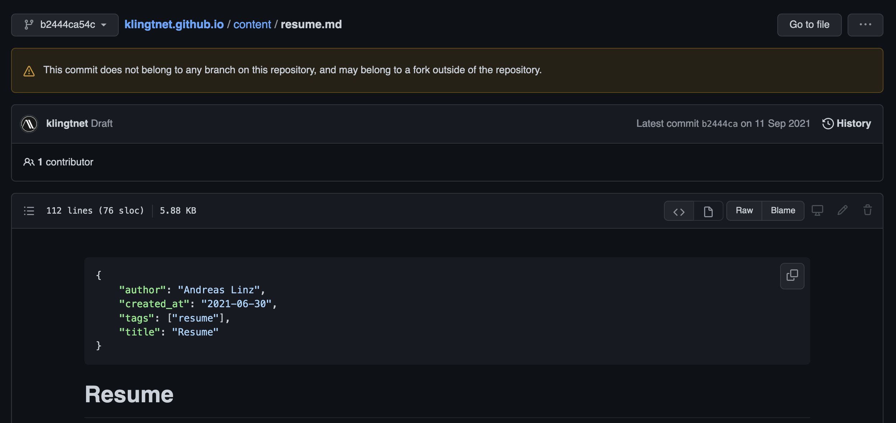

How to delete unreachable commits on GitHub
The dangling1 commit shown in the screenshot below should have never been on GitHub, at least not publicly visible. The commit was part of a branch called draft that I pushed to the repository when it was still private. If I am not mistaken then I removed the file, squashed and merged the draft branch into master, deleted the branch and then pushed it onto GitHub. After making sure that branch draft was gone on GitHub I made the repository public.

As you can clearly see the commit is still there, and I only discovered this by accident when using GitHub's search. So, the question is now how to delete this commit? I cannot even reach the commit from my local repository:
$ git show b2444ca54c74a7c9dde6504cf028b6c0f4729d8f
fatal: bad object b2444ca54c74a7c9dde6504cf028b6c0f4729d8f
Its parent commit is reachable though:
$ git show 01aea0c8e1bdceb7869403814a4ebb87e25883b2
commit 01aea0c8e1bdceb7869403814a4ebb87e25883b2
Author: Andreas Linz <klingt.net@gmail.com>
Date: Sun Jul 25 16:18:10 2021 +0200
Initial commit
If the commit would still be part of my local repository I could have removed it with this call and subsequent git push.
$ git reflog expire --expire-unreachable=all
But, nothing happens since the commit is not in my local repository. What to do now 🤔? As far as I see there is nothing I can do locally and cloning the repository will also omit the commit I want to delete. GitHub must trigger the garbage collection for this repository so I opened a ticket with them. What really amazed me was how fast they responded, after 10 minutes everything was done and that's for a free account! Here's what they wrote in the response:
As you mentioned, it does indeed appear to be an an unreferenced commit dangling in our cache. I went ahead and performed the garbage collection and cache clearance operations for the repository klingtnet/klingtnet.github.io. Attempting to access the commit directly now returns a 404.
Luckily the commit contained no secrets, but what I learned from this lesson is that I need to double or triple check the contents of my repository before making it public on GitHub. A simple deletion of a branch might not be sufficient.
-
Dangling, free-standing, unreachable or unreferenced, all terms fit here. ↩︎